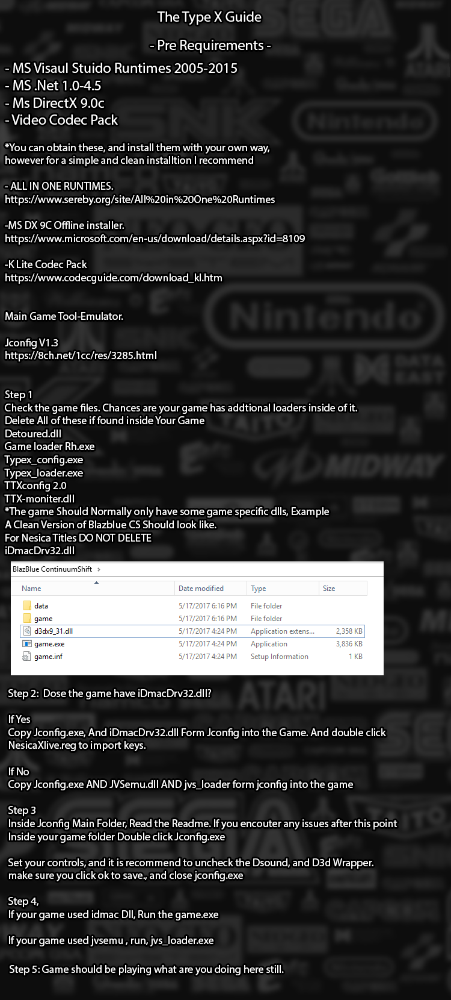

Tutorial
Some notes can be found below, please read them!
All in one runtimes link: here
Microsoft DirectX 9C link: here
K Lite Codec Pack link (Use STANDARD): here
Latest Jconfig: here
Notes
A few notes in addition to above
- READ THE READMES IN JCONFIG COMPLETELY!!!!
- If the game contains a d3d9.dll or opengl dll and isnt working, delete them and try agin, these files are common culprits for errors.
- Some games, including Homura, Chaos Breaker, Gigawing, Psychic Force, and Shikigami are d3d8 games and have issues on modern computers, such as Homura running at warp speed, use reshade with the d3d8to9 plugin or dgvoodoo d3d8 to modern d3d9/11 to fix. Reshade is recommended!
- If jconfig doesn't work for the taisen games, use this loader instead.
- All nesica games need iDmacDrv32.dll, some downloads don't have it, so always add the one from jconfig.
- Completely read the README.txt files in the iDmacX and JVSEmu folders, they go over exactly what is needed for every currently supported game.
- Puzzle & Dragons can be a little complicated to setup, refer to here.
- King of Fighters MIRA windows 10 fix here.
- Koing of Fighters 98 Ultimate Match might not work if you don't have a D: drive, so add one if it crashes for no reason. Fix is being investigated.
- Extra stuff for Gundam Spirits of Zeon, use dummy data if it isn't working, here
- Controls for gundam, hardcoded: 1 - p1 start, 2 - p2 start, 5 - coin, mouse - aim, left click - fire, right click - special, F2 - test, F7 - service
- Won!tertainment needs game.exe to be renamed to notgame.exe, and gameapp.exe to game.exe, it also likes to throw an error 700, thats just what it does so dont freak out.
- Battle Gear 4 needs a writable E: drive
- For now, run ss4ae export with manual cryptserver and 300200.key, more info soon